Project 3A: Image Warping & Mosaicing
Shooting the Pictures
I captured a few pairs of images to perform homography. I captured these images by fixing the center of projection (CoP), and rotating the camera so that there's overlap between the images.
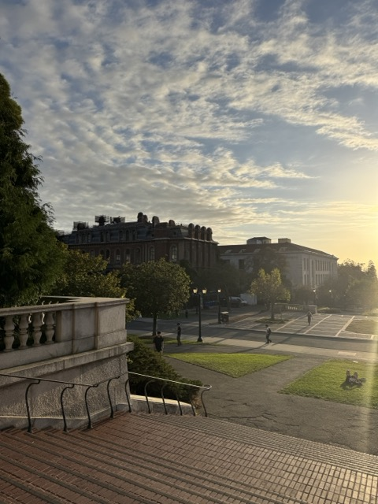
Campus Image 1
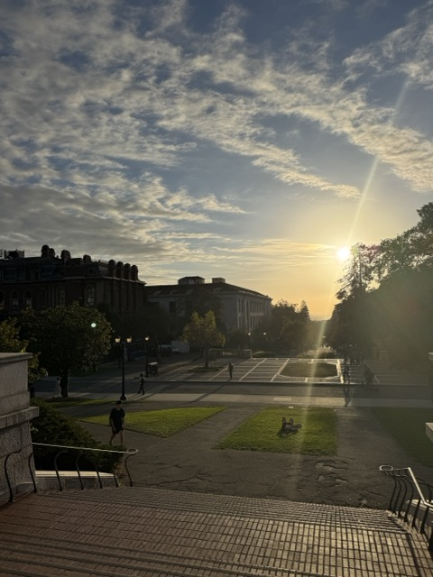
Campus Image 2
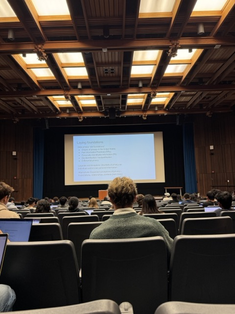
Wheeler 150 Image 1
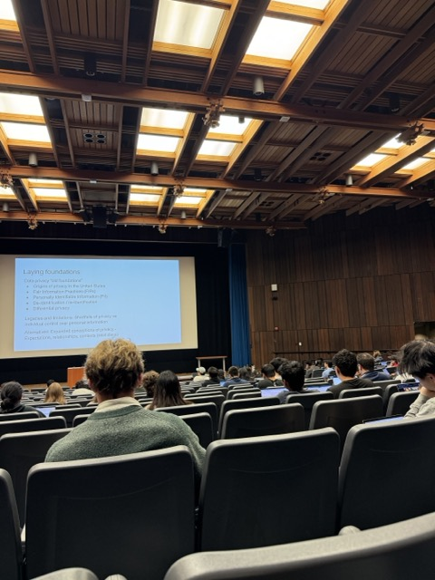
Wheeler 150 Image 2
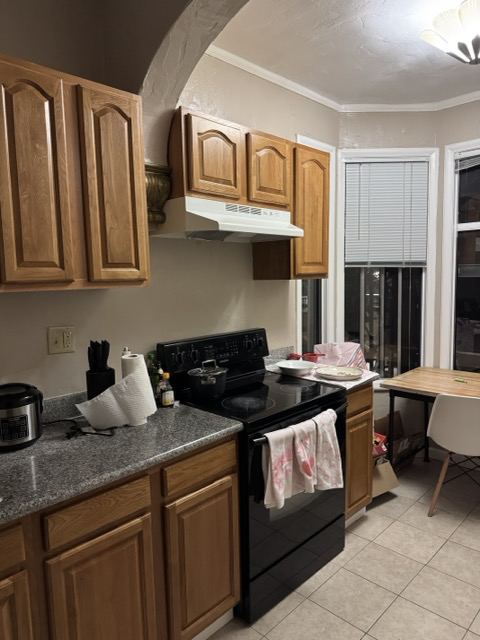
Kitchen Image 1
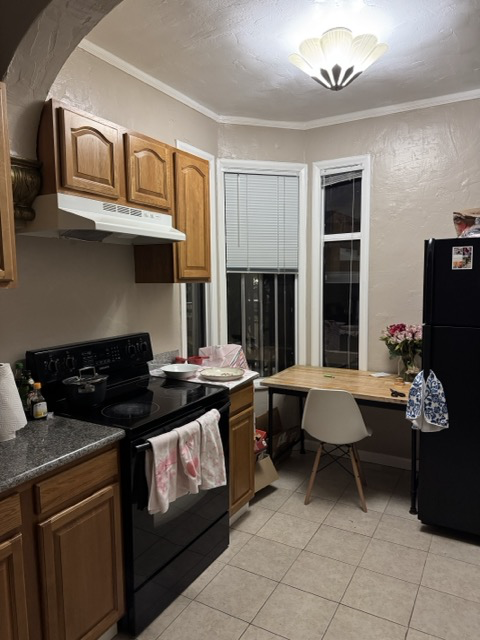
Kitchen Image 2
Recovering Homographies
Next, we need to establish a homography matrix so we can perform projective transformation on one image to bring it to the same angle of another.
This homography matrix H essentially maps the pixels of an image to "matching" points in the other. We want to find the 3x3 matrix H with 8 degrees of freedom such that:
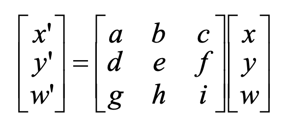
p' = Hp
Where p is the original point, and p' is the transformed point. Since we have 8 unknowns to solve for,
we need at least 4 point correspondences between the two images. We can use these point correspondences to solve a system of equations containing the components of H. After rearranging some terms, this defined as the following:
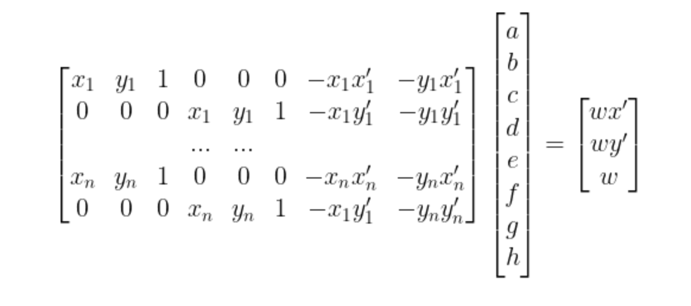
System of Equations
We can use this to solve for a, b, c, d, e, f, g (h=1). This solution is homogenous and can be solved with least squares if we have more than 4 points. In fact, having more than 4 point correspondences is better because we get a more accurate computation for H.
Using an online tool, I found a good amount of point correspondences for each image. Here are the images and their point correspondences.
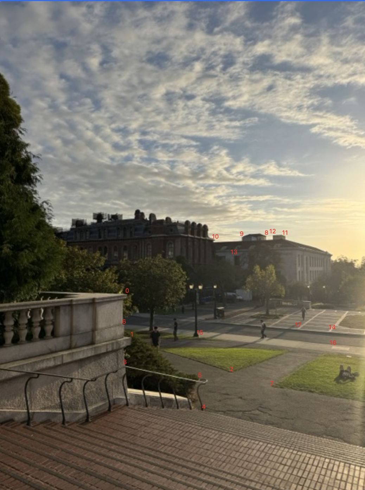
Campus Image 1 Points
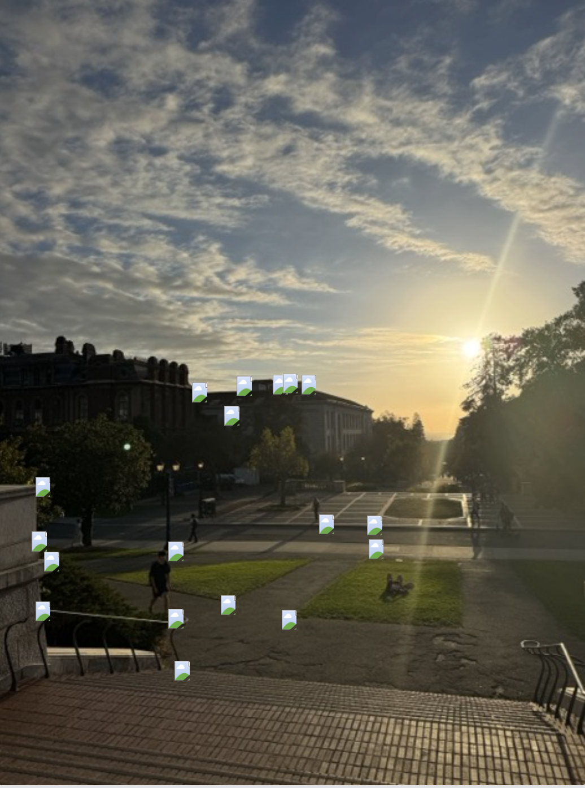
Campus Image 2 Points
Here's the system of equations for the campus 1 images:
[165, 379, 1, 0, 0, 0, -5940, -13644]
[0, 0, 0, 165, 379, 1, -64515, -148189]
[171, 435, 1, 0, 0, 0, -7353, -18705]
[0, 0, 0, 171, 435, 1, -77121, -196185]
[300, 480, 1, 0, 0, 0, -55500, -88800]
[0, 0, 0, 300, 480, 1, -145800, -233280]
[162, 471, 1, 0, 0, 0, -5832, -16956]
[0, 0, 0, 162, 471, 1, -79542, -231261]
[264, 529, 1, 0, 0, 0, -39072, -78292]
[0, 0, 0, 264, 529, 1, -142296, -285131]
[259, 488, 1, 0, 0, 0, -37037, -69784]
[0, 0, 0, 259, 488, 1, -128723, -242536]
[161, 419, 1, 0, 0, 0, -5313, -13827]
[0, 0, 0, 161, 419, 1, -70035, -182265]
[352, 499, 1, 0, 0, 0, -82368, -116766]
[0, 0, 0, 352, 499, 1, -175296, -248502]
[345, 304, 1, 0, 0, 0, -78315, -69008]
[0, 0, 0, 345, 304, 1, -106605, -93936]
[313, 305, 1, 0, 0, 0, -61974, -60390]
[0, 0, 0, 313, 305, 1, -97030, -94550]
[279, 309, 1, 0, 0, 0, -45198, -50058]
[0, 0, 0, 279, 309, 1, -87885, -97335]
[369, 304, 1, 0, 0, 0, -92250, -76000]
[0, 0, 0, 369, 304, 1, -114021, -93936]
[353, 302, 1, 0, 0, 0, -82955, -70970]
[0, 0, 0, 353, 302, 1, -108724, -93016]
[303, 329, 1, 0, 0, 0, -56964, -61852]
[0, 0, 0, 303, 329, 1, -101202, -109886]
[430, 426, 1, 0, 0, 0, -130290, -129078]
[0, 0, 0, 430, 426, 1, -181460, -179772]
[259, 433, 1, 0, 0, 0, -37037, -61919]
[0, 0, 0, 259, 433, 1, -114737, -191819]
[431, 446, 1, 0, 0, 0, -131024, -135584]
[0, 0, 0, 431, 446, 1, -190071, -196686]
[386, 423, 1, 0, 0, 0, -101904, -111672]
[0, 0, 0, 386, 423, 1, -162506, -178083]
And here is the recovered homography matrix for the campus images:
[[ 1.40929018e+00 1.23507887e-02 -1.94344809e+02]
[ 2.60566503e-01 1.28513602e+00 -7.86819703e+01]
[ 8.24196549e-04 4.91881202e-05 1.00000000e+00]]
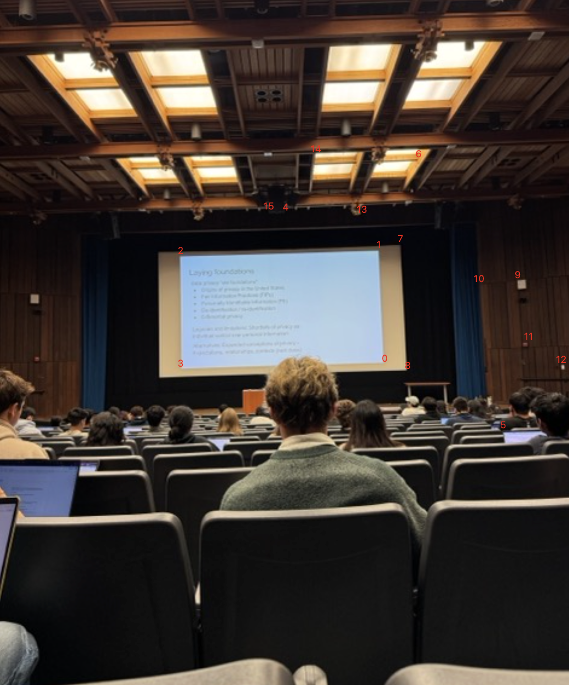
Wheeler Image 1 Points
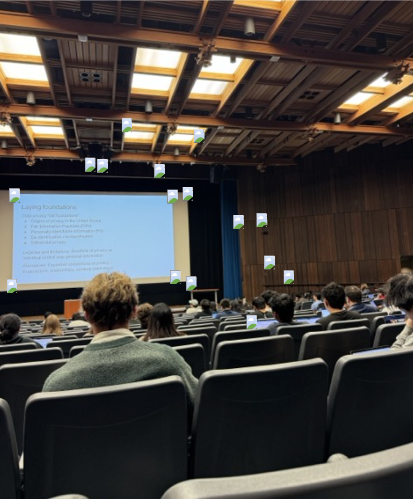
Wheeler Image 2 Points
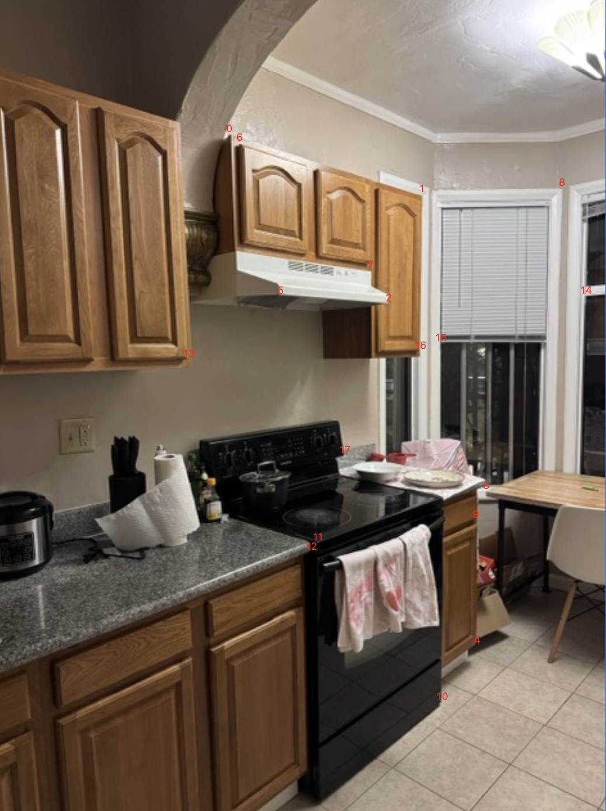
Kitchen Image 1 Points
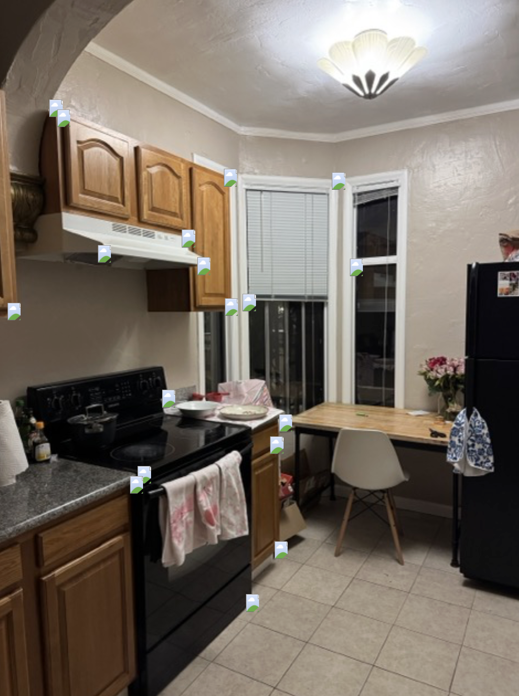
Kitchen Image 2 Points
Warping Images
Now that we have a way to compute the transformation matrix H between two images, we can warp each image towards its reference/original image. To avoid holes in the output image, I used inverse warping to warp each pixel.
To decide pixel values for each of the warped pixels, I implemented two different interpolation methods:
- Nearest Neighbor Interpolation: Round coordinates to the nearest pixel value
- Bilinear Interpolation: Use weighted average of four neighboring pixels
I tried out both methods of interpolation on the first image for each pair of images. Here are the comparisons:
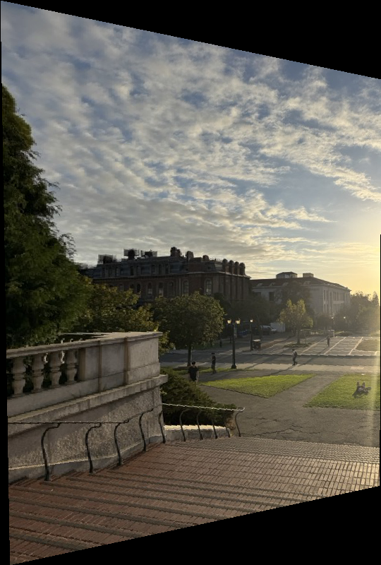
Campus with Nearest Neighbor
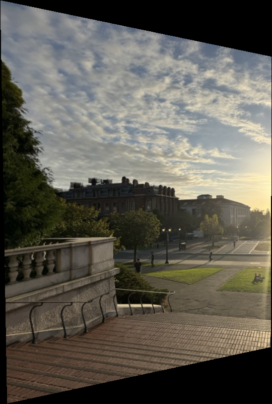
Campus with Bilinear
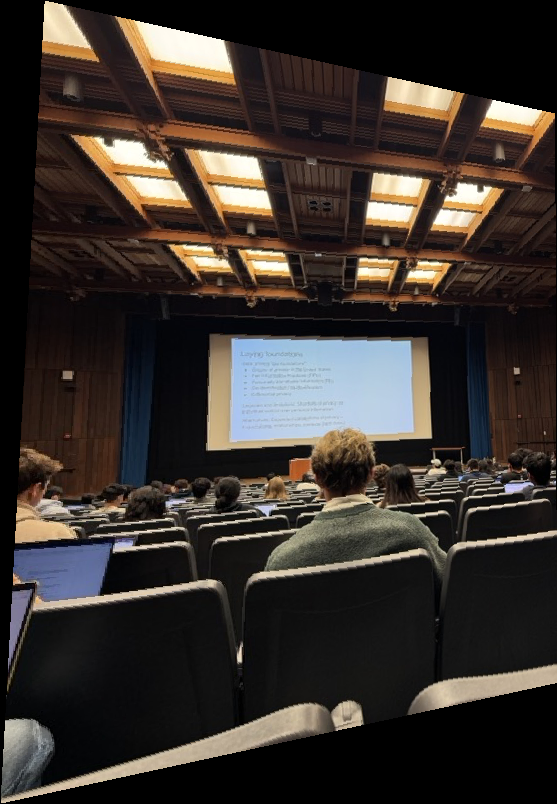
Wheeler with Nearest Neighbor
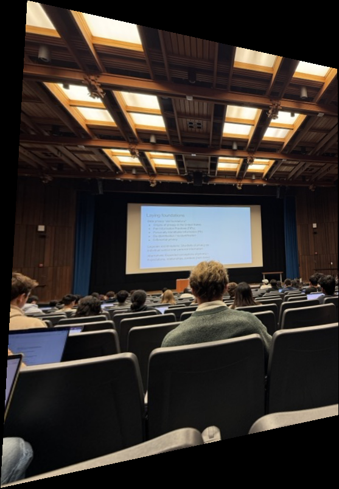
Wheeler with Bilinear
Kitchen with Nearest Neighbor
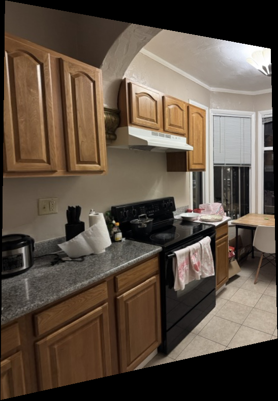
Kitchen with Bilinear
Both of them look pretty good! They might differ by a few pixels. The bilinear interpolation took about 2-3x longer than the nearest neighbor interpolation.
In addition, I tried out rectification by taking photos of posters or paintings from an angle, and then using homograpy to make them rectangular. Here's the results of both methods of interpolation:
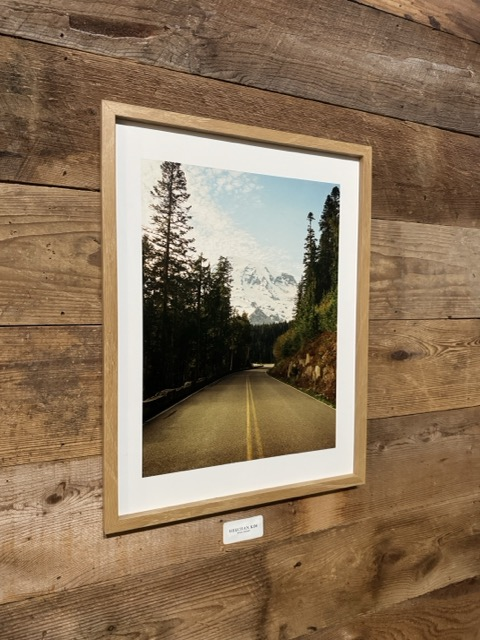
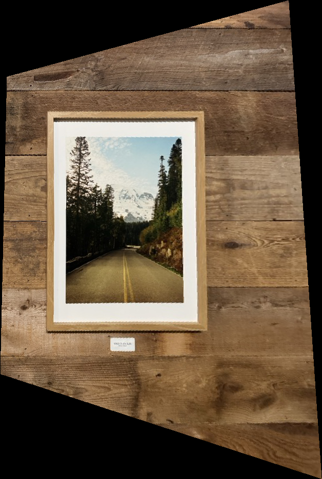
Nearest Neighbor
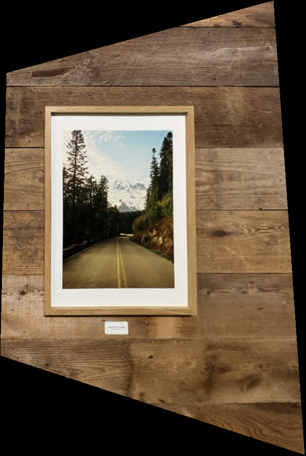
Bilinear
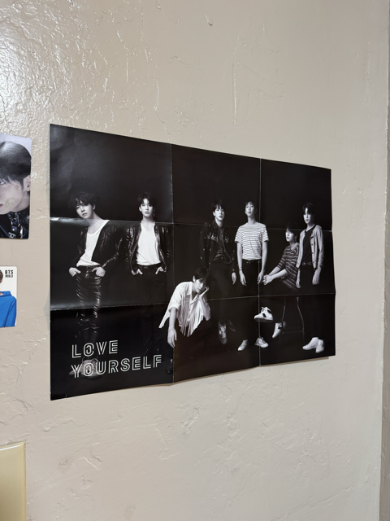
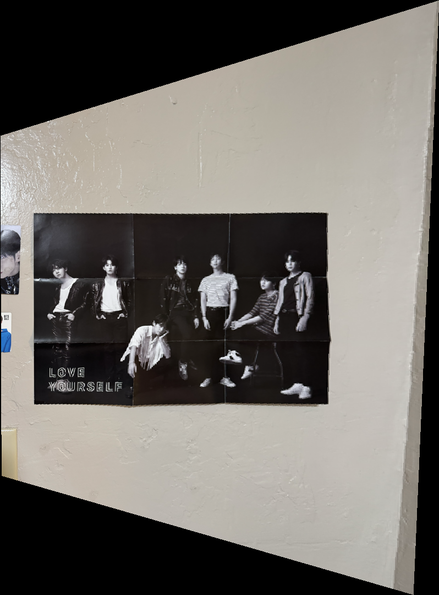
Nearest Neighbor
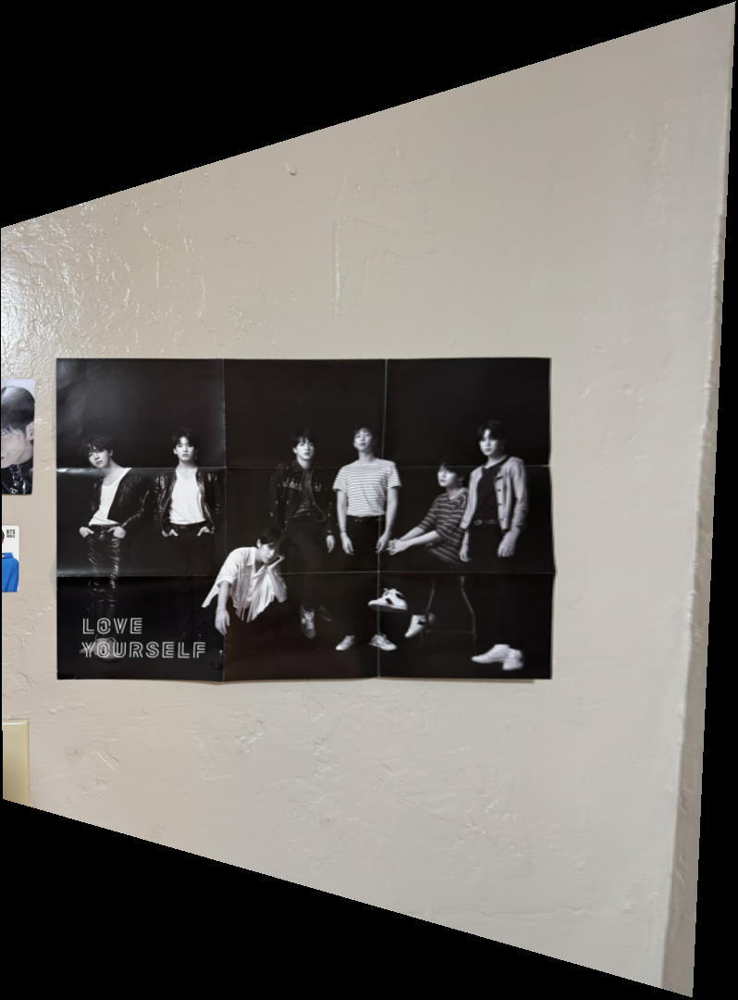
Bilinear
Blending the Images into a Mosaic
Finally, after performing homography on images, I was able to stitch them together and blend them to create a nice mosaic. I created mosaics using all the images in the first part of this website.
For smoother blending, I used an alpha mask over the overlap between the two images. I applied a gaussian filter over the mask before combining the two images. This minimized the edges to a decent extent.
Campus Image 1
Campus Image 2
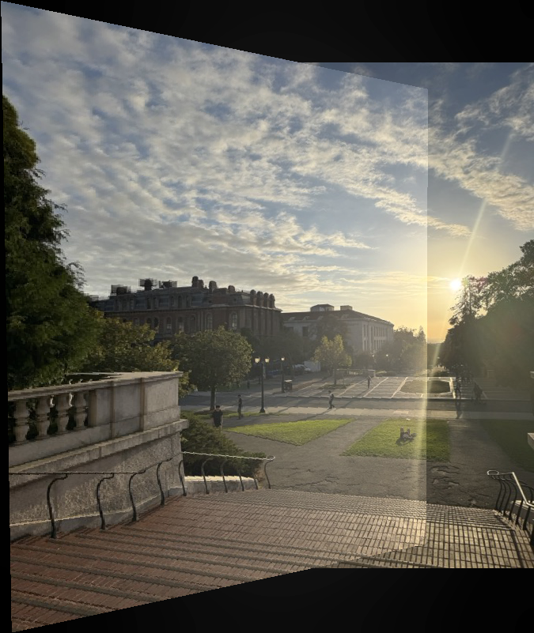
Campus Mosaic
Wheeler Image 1
Wheeler Image 2
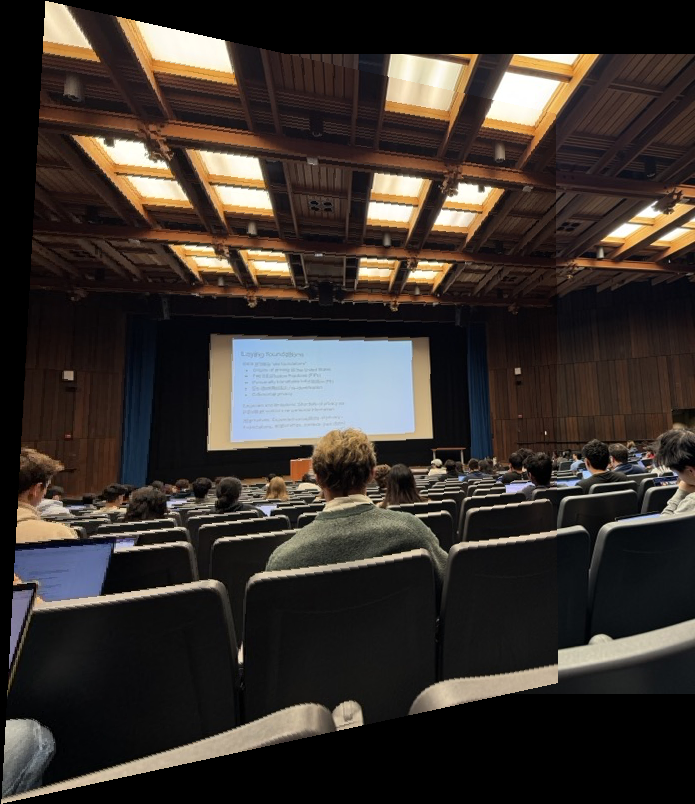
Wheeler Mosaic
Kitchen Image 1
Kitchen Image 2
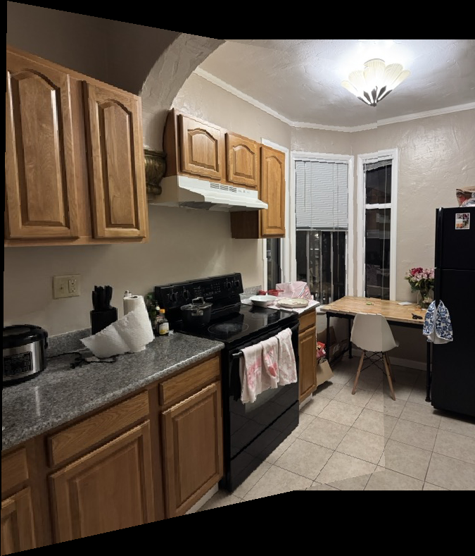
Kitchen Mosaic